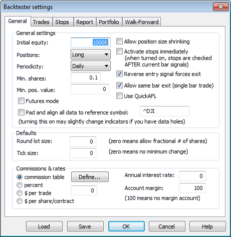
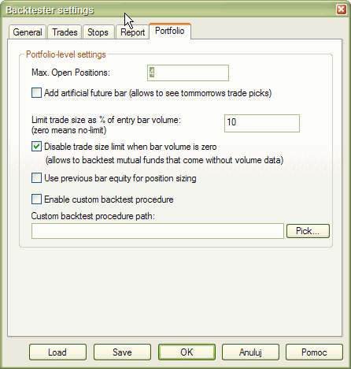

Here you can define the following parameters of backtesting:
General tab
Initial equity - defines the size of your account. In Portfolio backtest - it represents the entire portfolio size. In "Individual" backtest it is the per-symbol initial equity.
Positions considered (long, short, both long and short)
Futures mode
This check box in the settings page is the key to backtesting futures. It instructs the backtester to use margin deposit and point value in calculations.
Min. shares
The minimum number of shares that are allowed to buy/short. The backtester will not enter trades below that limit. Should be 1 for stocks. Fractional values are good for mutual funds.
Min. pos value
The minimum position value (in base currency) of the trade that is allowed to be entered. The backtester will not enter trades below that limit. Zero means no limit.
Pad and align to reference symbol
When this is turned on, all symbols' quotes are padded and aligned to reference symbol. Note: by default this setting is OFF. Use responsibly. It may slow down backtest, exploration, or scan and introduce some slight changes to indicator values when your data has holes and holes are filled with previous bar data. The feature is intended to be used when your system uses general market timing (generates global signals based on data and/or indicators calculated using Foreign from 'reference' symbol) or when you are creating composites out of unaligned data. Note: if reference symbol does not exist, data won't be padded.
Account margin
This setting defines the percentage margin requirement for the entire account. The default value of Account margin is 100. This means that you have to provide 100% funds to enter the trade, and this is how the backtester worked in previous versions. But now you can simulate a margin account. When you buy on margin you are simply borrowing money from your broker to buy stock. With current regulations you can put up 50% of the purchase price of the stock you wish to buy and borrow the other half from your broker. To simulate this just enter 50 in the Account margin field (see pic. 1) . If your initial equity is set to 10000 your buying power will then be 20000 and you will be able to enter bigger positions. Please note that this setting sets the margin for the entire account and it is NOT related to futures trading at all. In other words you can trade stocks on a margin account.
Commissions
Annual interest rate
This setting allows you to define annual interest earned when you are out of the market or your position is less than available equity.
Periodicity
This setting controls the bar interval used for backtesting/scan/exploration/optimization. To backtest intraday data you should switch to the proper interval there and then run the backtest.
Allow position size shrinking
If you mark this box AmiBroker will shrink down positions if available equity is less than requested position size (via PositionSize variable). If this box is unmarked, positions will not be entered in such case.
Activate stops immediately
When you trade on open and want to have built-in stops activated on the same bar - just mark this box.
If you trade on close and want built-in stops to be activated from the next bar - unmark this box.
You may ask why not simply check the buyprice or shortprice array if it is equal to open price. Unfortunately this won't work. Why? Simply because there are doji days when open price equals close and then the backtester will never know if trade was entered at market open or market close.
Round lot size
Various instruments are traded with various "trading units" or "blocks". For example, you can purchase a fractional number of units of a mutual fund, but you cannot purchase fractional number of shares. Sometimes you have to buy in lots of 10 or 100. AmiBroker now allows you to specify the block size on a global and per-symbol level.
You can define per-symbol round lot size in the Symbol->Information page. A value of zero means that the symbol has no special round lot size and will use "Default round lot size" (global setting) from the Automatic Analysis settings page. If the default size is also set to zero it means that a fractional number of shares/contracts is allowed.
RoundLotSize = 10;
Tick size
This setting controls the minimum price move of a given symbol. You can define it on a global and per-symbol level. As with round lot size, you can define per-symbol tick size in the Symbol->Information page. A value of zero instructs AmiBroker to use "default tick size" defined in the Settings page of Automatic Analysis window. If the default tick size is also set to zero it means that there is no minimum price move.
You can set and retrieve the tick size also from AFL formula using TickSize reserved variable, for example:
TickSize = 0.01;
Note that the tick size setting affects ONLY trades exited by built-in stops and/or ApplyStop(). The backtester assumes that price data follow the tick size requirements and it does not change the price arrays supplied by the user.
So specifying tick size makes sense only if you are using built-in stops so exit points are generated at "allowed" price levels instead of calculated ones. For example in Japan - you cannot have fractional parts of a yen so you should define the global tick size to 1, so built-in stops exit trades at integer levels.
Reverse entry signal forces exit
When it is ON (the default setting) - the backtester works as in previous versions
and closes already open position if a new entry signal in reverse direction
is encountered. If this switch is OFF - even if a reverse signal occurs, the backtester
maintains currently open trade and does not close a position until regular exit
(sell or cover) signal is generated.
In other words when this switch is OFF, the backtester ignores short signals during
long trades and ignores buy signals during short trades.
Allow same bar exit (single bar trade)
When it is ON - entry and exit at the very same bar are allowed, when it is OFF, then exit may occur only on bars following the entry bar. You may turn "Allow same bar exit" option ON only if you are entering trades on OPEN. If you are entering trades on any other time than the bar's open, this option should be turned off to avoid looking into the future.
Use QuickAFL
QuickAFL(tm) is a feature that allows faster AFL calculation under certain conditions. Initially (since 2003) it was available for indicators only, as of version 5.14+, it is available in Automatic Analysis too.
Initially the idea was to allow faster chart redraws through calculating the AFL
formula only for the part which is visible on the chart. In a similar manner,
the Automatic Analysis window can use a subset of available quotations to calculate
AFL, if the selected “range” parameter is less than “All quotations".
Detailed explanation on how QuickAFL works and how to control it, is provided
in this Knowledge Base article: http://www.amibroker.com/kb/2008/07/03/quickafl/
Trades tab
Stop tab
See APPLYSTOP function for more details on the different stop settings
Report tab
Result list shows
This decides which format of the result list is used by the new backtester. Possible choices:
Risk-free rates
Defines risk-free rates for Sharpe and UPI stats
Distribution charts spacing
Defines the spacing of profit, MAE, and MFE distribution charts. The spacing is the percentage amount of profit/MAE/MFE per single bar in a chart.
Generate detailed reports for individual backtests
This causes that in Individual backtest mode, a full report is generated and stored for every security under test. Note that this will slow down the test and take up quite a bit of hard disk space
Include trade list in the report
When turned ON (by default) the backtest report also includes a trade list. Note that trade lists may be huge and consume quite a bit of disk space
Warn before time-consuming optimizations
When turned ON (by default), AmiBroker will display a confirmation dialog box when your optimization has more than 300 steps.
Portfolio tab

Max. Open Positions
Max. Open Positions - the maximum number of simultaneously open positions. Settable also using SetOption("MaxOpenPositions", number ) function.
Add artificial future bar
When checked AmiBroker adds tomorrow's bar and this enables you to see tomorrow's (or next bar) trade recommendations when your system uses one bar delay. An artificial future bar has an incremented date and volume set to zero and all price fields (OHLC) set to the CLOSE price of the last data bar.
Limit trade size as % of entry bar volume
This prevents entering trades greater than a given percentage of entry bar's volume. For example, if backtesting daily data, and today's volume for thinly traded stock is 177,000 shares, setting this to 10% will limit the maximum trade size to 17,700 shares (10% of total daily volume). This prevents 'affecting the market' by huge orders.
IMPORTANT NOTE:
Some instruments like MUTUAL FUNDS come without VOLUME data. To backtest such
instruments please set this field to ZERO (0) or check "Disable trade size
limit when bar volume is zero" box. This effectively turns OFF this feature.
Otherwise you won't be able to enter any trade at
all.
Disable trade size limit when bar volume is zero
When it is turned ON and the entry bar volume is zero the backtester will not apply the "limit trade size as % of entry bar volume" - this is to allow backtesting mutual funds that come with zero volume data. When it is OFF and entry bar volume is zero then the backtester will not allow to enter the trade on such bar.
Use previous bar equity for position sizing
Affects how a percentage of current equity position sizing is performed.
Unchecked (default value) means: use the current (intraday) equity to perform position
sizing, checked means: use the previous bar closing equity to perform position
sizing.
Enable custom backtest procedure
When checked AmiBroker applies the custom backtest formula specified in the field below to every backtest that you run. This is useful if you want to permanently add your custom metrics to all backtests without the need to copy-paste the same code.
Custom backtest procedure path
The full path to custom backtest formula (see above).
Old tab
Drawdown figures based on...
Drawdown figures in the backtest report measure the equity dip experienced during the trade(s). To calculate the dip you can use the worst-case scenario: low price for long trades and high price for short trades, or a single price (open or close) for both long and short trades. "Drawdown figures based on..." setting (pic. 2) allows you to choose the price(s) used to calculate drawdowns. Using the worst-case scenario you will get a few percent larger drawdowns than using close or open price. On the other hand Equity() function always uses shortprice/coverprice array so you may choose the open or close field here to match drawdowns as observed in the equity line.
Formula
- Mark this box to include the AFL formula in the backtest report
Settings
- Mark this box to include settings in the backtest report
Incl. out-of-market pos
- Mark this box to include out-of-market positions in the backtest report
Overall summary
- Mark this box to include the sum of individual symbol backtest results
Symbol summary
- Mark this box to include per-symbol summaries
Trade list
- Choose the format of the trade list included in the report